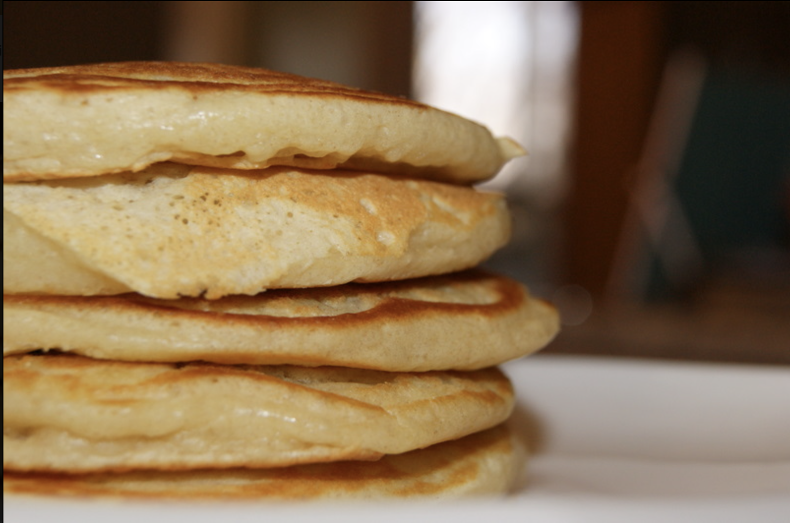

Buttermilk Pancakes

Description:
Fluffy buttermilk pancakes that taste good with or without syrup.
Ingredients:
- 3/4 c milk
- 1 Tbs white vinegar
- 1 c flour
- 2 Tbs white sugar
- 1 tsp baking powder
- 1/2 tsp baking soda
- 1/2 tsp salt
- 1 egg
- 1 tsp vanilla
- 2 Tbs butter, melted
- cooking spray
Directions:
Combine milk with vinegar in a medium bowl and set aside for 5 minutes to "sour."
Combine flour, sugar, baking powder, baking soda, and salt in a large mixing bowl.
Whisk egg, vanilla, and butter into "soured" milk. Pour the flour mixture into the
wet ingredients and whisk until lumps are gone.
Heat a large skillet over medium heat, and coat with cooking spray.
Pour 1/4 cup of batter onto the skillet and cook until bubbles appear on the surface.
Flip with a spatula and cook until browned on the other side.